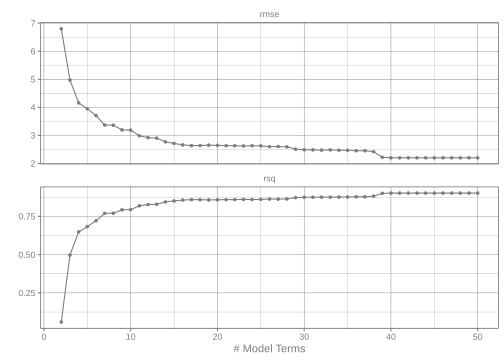
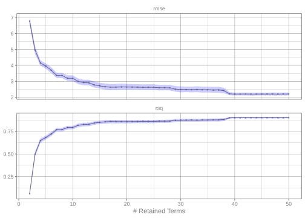

library(tidymodels)
str(deliveries)
#> tibble [10,012 × 31] (S3: tbl_df/tbl/data.frame)
#> $ time_to_delivery: num [1:10012] 16.1 22.9 30.3 33.4 27.2 ...
#> $ hour : num [1:10012] 11.9 19.2 18.4 15.8 19.6 ...
#> $ day : Factor w/ 7 levels "Mon","Tue","Wed",..: 4 2 5 4 5 6 7 4 5 7 ...
#> $ distance : num [1:10012] 3.15 3.69 2.06 5.97 2.52 3.35 2.46 2.21 2.62 2.75 ...
#> $ item_01 : int [1:10012] 0 0 0 0 0 1 0 0 0 0 ...
#> $ item_02 : int [1:10012] 0 0 0 0 0 0 0 0 0 2 ...
#> $ item_03 : int [1:10012] 2 0 0 0 0 0 1 1 0 1 ...
#> $ item_04 : int [1:10012] 0 0 0 0 1 1 1 0 0 0 ...
#> $ item_05 : int [1:10012] 0 0 1 0 0 0 0 0 0 0 ...
#> $ item_06 : int [1:10012] 0 0 0 0 0 0 0 1 0 0 ...
#> $ item_07 : int [1:10012] 0 0 0 0 1 1 0 0 1 0 ...
#> $ item_08 : int [1:10012] 0 0 0 0 0 0 0 1 0 0 ...
#> $ item_09 : int [1:10012] 0 0 0 0 0 1 0 0 0 0 ...
#> $ item_10 : int [1:10012] 1 0 0 0 0 0 0 0 0 0 ...
#> $ item_11 : int [1:10012] 1 0 0 0 1 1 0 0 0 0 ...
#> $ item_12 : int [1:10012] 0 0 0 1 0 0 0 0 0 1 ...
#> $ item_13 : int [1:10012] 0 0 0 0 0 0 0 0 0 0 ...
#> $ item_14 : int [1:10012] 0 0 0 0 1 0 0 0 0 0 ...
#> $ item_15 : int [1:10012] 0 0 0 0 0 0 0 0 1 0 ...
#> $ item_16 : int [1:10012] 0 0 0 0 0 0 0 0 0 0 ...
#> $ item_17 : int [1:10012] 0 0 0 0 0 0 0 0 0 1 ...
#> $ item_18 : int [1:10012] 0 1 0 0 0 0 0 0 0 1 ...
#> $ item_19 : int [1:10012] 0 0 0 0 0 0 0 0 0 0 ...
#> $ item_20 : int [1:10012] 0 0 1 0 0 0 0 0 0 0 ...
#> $ item_21 : int [1:10012] 0 0 0 0 0 0 0 1 0 0 ...
#> $ item_22 : int [1:10012] 0 0 0 0 0 1 1 0 0 1 ...
#> $ item_23 : int [1:10012] 0 0 0 0 0 0 0 0 0 0 ...
#> $ item_24 : int [1:10012] 0 0 1 0 0 1 0 0 0 0 ...
#> $ item_25 : int [1:10012] 0 0 0 0 0 0 0 0 0 0 ...
#> $ item_26 : int [1:10012] 0 0 0 0 0 0 0 0 1 0 ...
#> $ item_27 : int [1:10012] 0 0 0 1 1 0 0 0 0 0 ...Confidence Intervals for Performance Metrics
model fitting
confidence intervals
bootstrapping
tidymodels has high-level functions to produce bootstrap confidence intervals for performance statistics.
Introduction
The tidymodels framework focuses on evaluating models via empirical validation: out-of-sample data are used to compute model accuracy/fitness measures. Because of this, data splitting and resampling are essential components of model development.
If a model uses traditional resampling (such as 10-fold cross-validation), it is easy to get confidence intervals (or Bayesian intervals) of performances. For example, if you are looking at classification accuracy, you can say something like,
Our accuracy was estimated to be 91.3% with a 90% confidence interval of (80.1%, 95.9%).
We have replicated performance estimates for these traditional resampling methods (e.g., 10 accuracy estimates from 10-fold cross-validation), so a simple standard error calculation is often a good approach for computing a confidence interval.
When we have a lot of data, for some definition of “a lot,” we might choose to use a validation set. This single data collection allows us to estimate performance during model development (without touching the test set). However, it results in a single performance estimate, so the traditional approach to computing confidence intervals isn’t feasible.
This article discusses using the bootstrap to estimate confidence intervals for performance using tidymodels. To use code in this article, you will need to install the following packages: earth and tidymodels. We’ll use data from the modeldata package to demonstrate.
Example Data
We’ll use the delivery time data and follow the analysis used in Applied Machine Learning for Tabular Data. The outcome is the time for food to be delivered, and the predictors include the day/hour of the order, the distance, and what was included in the order (columns starting with item_):
Given the amount of data, a validation set was used in lieu of multiple resamples. This means that we can fit models on the training set, evaluate/compare them with the validation set, and reserve the test set for a final performance assessment (after model development). The data splitting code is:
set.seed(991)
delivery_split <- initial_validation_split(deliveries, prop = c(0.6, 0.2),
strata = time_to_delivery)
# Make data frames for each of the three data sets
delivery_train <- training(delivery_split)
delivery_test <- testing(delivery_split)
delivery_val <- validation(delivery_split)
# Create an object that bundle training and validation set as a resample object
delivery_rs <- validation_set(delivery_split)Tuning a Model
To demonstrate, we’ll use a multivariate adaptive regression spline (MARS) model produced by the earth package. The original analysis of these data shows some significant interactions between predictors, so we will specify a model that can estimate them using the argument prod_degree = 2. Let’s create a model specification that tunes the number of terms to retain:
Let’s use grid search to evaluate a grid of values between 2 and 50. We’ll use tune_grid() with an option to save the out-of-sample (i.e., validation set) predictions for each candidate model in the grid. By default, for regression models, the function computes the root mean squared error (RMSE) and R2:
grid <- tibble(num_terms = 2:50)
ctrl <- control_grid(save_pred = TRUE)
mars_res <-
mars_spec %>%
tune_grid(
time_to_delivery ~ .,
resamples = delivery_rs,
grid = grid,
control = ctrl
)
#>
#> Attaching package: 'plotrix'
#> The following object is masked from 'package:scales':
#>
#> rescaleHow did the model look?
autoplot(mars_res)
After about 20 retained terms, both statistics appear to plateau. However, we have no sense of the noise around these values. Is a model with 20 terms just as good as a model using 40? In other words, is the slight improvement in RMSE that we see around 39 terms real or within the experimental noise? Forty is a lot of model terms, but that smidgeon of improvement might really be worth it for our application.
For that, we’ll compute confidence intervals. However, there are no analytical formulas for most performance statistics, so we need a more general method for computing them.
Bootstrap Confidence Intervals
In statistics, the bootstrap is a resampling method that takes a random sample the same size as the original but samples with replacement. This means that, in the bootstrap sample, some rows of data are represented multiple times and others not at all.
There is some theory that shows that if we recompute a statistic a large number of times using the bootstrap, we can understand its sampling distribution and, from that, compute confidence intervals. A good recent reference on this subject by the original inventor of the bootstrap is Computer Age Statistical Inference which is available as a free PDF.
For our application, we’ll take the validation set predictions for each candidate model in the grid, bootstrap them, and then compute confidence intervals using the percentile method. Note that we are not refitting the model; we will be solely relying on the existing out-of-sample predictions from the validation set.
There’s a tidymodels function called int_pctl() for this purpose. It has a method to work with objects produced by the tune package, such as our mars_res object. Let’s compute 90% confidence intervals using 2,000 bootstrap samples:
set.seed(140)
mars_boot <- int_pctl(mars_res, alpha = 0.10)
#> Warning: Too little data to stratify.
#> • Resampling will be unstratified.
mars_boot
#> # A tibble: 98 × 7
#> num_terms .metric .estimator .lower .estimate .upper .config
#> <int> <chr> <chr> <dbl> <dbl> <dbl> <chr>
#> 1 2 rmse bootstrap 6.56 6.79 7.01 pre0_mod01_post0
#> 2 3 rmse bootstrap 4.73 4.97 5.23 pre0_mod02_post0
#> 3 4 rmse bootstrap 3.99 4.15 4.31 pre0_mod03_post0
#> 4 5 rmse bootstrap 3.79 3.95 4.12 pre0_mod04_post0
#> 5 6 rmse bootstrap 3.53 3.70 3.89 pre0_mod05_post0
#> 6 7 rmse bootstrap 3.20 3.36 3.54 pre0_mod06_post0
#> 7 8 rmse bootstrap 3.20 3.36 3.54 pre0_mod07_post0
#> 8 9 rmse bootstrap 3.03 3.19 3.37 pre0_mod08_post0
#> 9 10 rmse bootstrap 3.01 3.18 3.37 pre0_mod09_post0
#> 10 11 rmse bootstrap 2.82 2.99 3.17 pre0_mod10_post0
#> # ℹ 88 more rowsThe results have columns for the mean of the sampling distribution (.estimate) and the upper and lower confidence bounds (.upper and .lower, respectively). Let’s visualize these results:
mars_boot %>%
ggplot(aes(num_terms)) +
geom_line(aes(y = .estimate)) +
geom_point(aes(y = .estimate), cex = 1 / 2) +
geom_ribbon(aes(ymin = .lower, ymax = .upper), alpha = 1 / 5, fill = "blue") +
facet_wrap(~ .metric, scales = "free_y", ncol = 1) +
labs(y = NULL, x = "# Retained Terms")
Those are very tight! Maybe there is some credence to using many terms. Let’s say that 40 terms seems like a reasonable value for that tuning parameter since the high degree of certainty indicates that the small drop in RMSE is likely to be real.
Test Set Intervals
Suppose the MARS model was the best we could do for these data. We would then fit the model (with 40 terms) on the training set then finally evaluate the test set. tidymodels has a function called last_fit() that uses our original data splitting object (delivery_split) and the model specification. To get the test set predictions, we can use collect_metrics():
mars_final_spec <-
mars(num_terms = 40, prod_degree = 2, prune_method = "none") %>%
set_mode("regression")
mars_test_res <-
mars_final_spec %>%
last_fit(time_to_delivery ~ ., split = delivery_split)
collect_metrics(mars_test_res)
#> # A tibble: 2 × 4
#> .metric .estimator .estimate .config
#> <chr> <chr> <dbl> <chr>
#> 1 rmse standard 2.20 pre0_mod0_post0
#> 2 rsq standard 0.892 pre0_mod0_post0These values are pretty consistent with what the validation set (and its confidence intervals) produced:
int_pctl() also works on objects produced by last_fit():
set.seed(168)
mars_test_boot <- int_pctl(mars_test_res, alpha = 0.10)
mars_test_boot
#> # A tibble: 2 × 6
#> .metric .estimator .lower .estimate .upper .config
#> <chr> <chr> <dbl> <dbl> <dbl> <chr>
#> 1 rmse bootstrap 2.11 2.20 2.27 pre0_mod0_post0
#> 2 rsq bootstrap 0.883 0.892 0.900 pre0_mod0_post0So, to sum up the main idea: If you’re not getting multiple estimates of your performance metric from your resample procedure—like when using a validation set—you can still get interval estimates for your metrics. A metric-agnostic approach is to bootstrap your predictions and recalculate your metrics based on those.
Notes
The point estimates produced by
collect_metrics()andint_pctl()may disagree. They are two different statistical estimates of the same quantity. For reasonably sized data sets, they should be pretty close.Parallel processing can be used for bootstrapping (using the same tools that can be used with the tune package). The documentation for the tune page has some practical advice on setting those tools up.
int_pctl()also works with classification and censored regression models. For the latter, the default is to compute intervals for every metric and every evaluation time.int_pctl()has options to filter which models, metrics, and/or evaluation times are used for analysis. If you investigated many grid points, you don’t have to bootstrap them all.Unsurprisingly, bootstrap percentile methods use percentiles. To compute the intervals, you should generate a few thousand bootstrap samples to get stable and accurate estimates of these extreme parts of the sampling distribution.
Session information
#> ─ Session info ─────────────────────────────────────────────────────
#> version R version 4.5.3 (2026-03-11)
#> language (EN)
#> date 2026-04-25
#> pandoc 3.1.3
#> quarto 1.9.37
#>
#> ─ Packages ─────────────────────────────────────────────────────────
#> package version date (UTC)
#> broom 1.0.12 2026-01-27
#> dials 1.4.3 2026-04-11
#> dplyr 1.2.1 2026-04-03
#> earth 5.3.5 2026-01-11
#> ggplot2 4.0.3 2026-04-22
#> infer 1.1.0 2025-12-18
#> parsnip 1.5.0 2026-04-09
#> purrr 1.2.2 2026-04-10
#> recipes 1.3.2 2026-04-02
#> rlang 1.2.0 2026-04-06
#> rsample 1.3.2 2026-01-30
#> tibble 3.3.1 2026-01-11
#> tidymodels 1.5.0 2026-04-23
#> tune 2.1.0 2026-04-17
#> workflows 1.3.0 2025-08-27
#> yardstick 1.4.0 2026-04-07
#>
#> ────────────────────────────────────────────────────────────────────